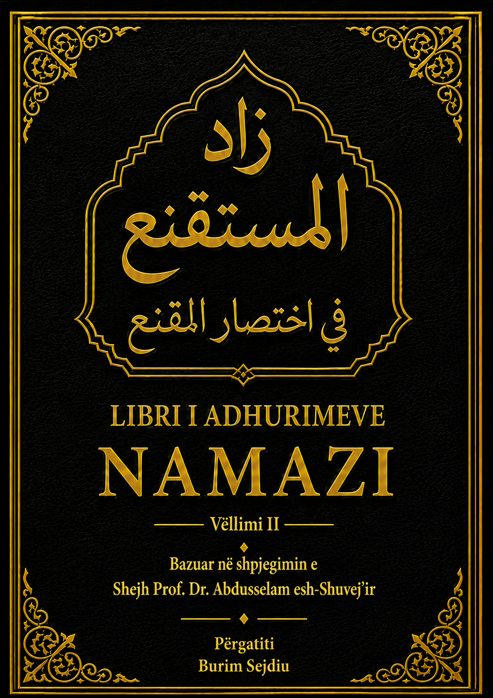

Vëllimi II
Namazi
Zad el-Mustakni‘ në përmbledhjen e El-Mukni‘
زاد المستقنع في اختصار المقنع
Botim në gjuhën shqipe. Kohët dhe kushtet e namazit, mënyra e faljes, namazi me xhemat dhe sexhdja e harresës.
Temat në libër
Pyetje nga vëllimi
Si citohet ky vëllim
Sherafuddin Ebu en-Nexha Musa ibn Ahmed ibn Musa el-Haxhavi el-Makdisi es-Salihi. Zad el-Mustakni‘ në përmbledhjen e El-Mukni‘. Vëllimi II, Namazi. Me shpjegimin e shejh Abdusselam ibn Muhamed esh-Shuaj‘ir. Përgatiti Burim Sejdiu.
Për të cituar një paragraf të veçantë, hape në libër dhe përdor butonin «Cito».